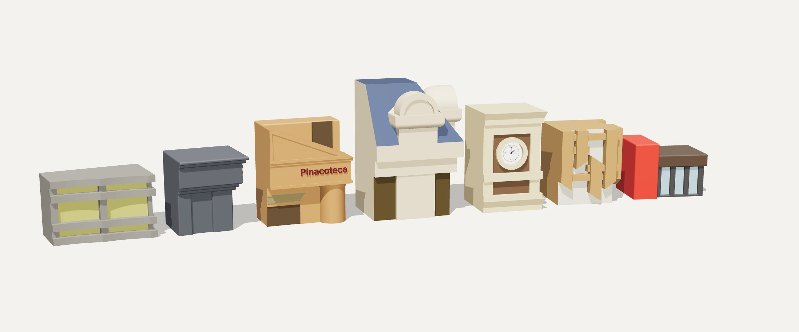

Rotas culturais por São Paulo, e um pedaço de cada lugar para levar para casa.

Contexto
São Paulo tem cultura de sobra. Falta um jeito fácil de chegar até ela.
A pergunta da disciplina era: como incentivar o acesso a tours culturais em São Paulo?
A resposta foi o Zero 11, um serviço de rotas temáticas pela cidade, cada uma pensada para um perfil de visitante. No fim de cada parada, a visita vira objeto: uma miniatura do lugar, que o visitante retira e leva para casa.
Desafio
O serviço
Cada rota nasceu de uma persona, com motivações e frustrações diferentes. O colecionável é o que as três têm em comum.
Quer conhecer os lugares famosos da cidade com as amigas, em dois dias, sem perder tempo montando roteiro.
Bete, 57 anosMora em São Paulo, mas conhece pouco da cena alternativa. Quer lugares ligados à música e curadoria em que confie.
Marcelo, 42 anosQuer se reconhecer na história da cidade e dos seus ancestrais, com acesso fácil e barato a museus e espaços culturais.
Yasmin, 19 anosComo funciona
A coleção
A coleção
Cada colecionável é um bloco que guarda o traço mais marcante de um prédio da cidade, com as cores do lugar. Role para ver um por um.
O museu de Lina Bo Bardi, na Avenida Paulista, virou dois volumes: o corpo envidraçado, com os montantes em relevo, e o bloco que o sustenta.
O casarão de esquina da Paulista, hoje dedicado à poesia, ficou com os volumes do telhado e os recortes da fachada. É a maior peça da coleção.
A fachada de ripas de madeira encaixadas virou um jogo de blocos sobrepostos, em profundidades diferentes, que desenham a fachada com luz e sombra.
A onda de Niemeyer cabe na mão. As faixas horizontais dos brises acompanham a curva da fachada, como no prédio.
Os frisos do art déco e o nome da biblioteca em relevo no topo, do jeito que aparece na fachada.
O nome do museu em relevo, a cobertura inclinada e o volume cilíndrico da entrada.
Na Estação da Luz, o óculo circular e o arco das janelas viraram as duas faces da peça, uma em cada lado da quina.
Resultado
Sete colecionáveis modelados, com a mesma linguagem de bloco e escala de mão.
Medidas dos modelos 3D finais.